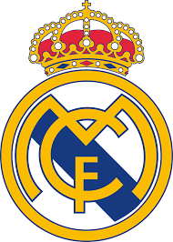

| الـبــيـــانــات الــشــخــصــيــة | |
| الاسم الكامل | توني كروس |
| تاريخ الميلاد | 4 يناير 1991 |
| محل الميلاد | غريفسفالد، ألمانيا الشرقية |
| العمر | 32 سنة |
| الطول | 1.83 متر |
| الجنسية | الـمـــانــيـا |
| محل الاقامه الحالية | مــدريــد |
| مركز اللعب | وســــط |
وني كروس (بالألمانية: Toni Kroos؛ مواليد 4 يناير 1990) هو لاعب كرة قدم ألماني يلعب في مركز الوسط مع ريال مدريد الإسباني ومنتخب ألمانيا لكرة القدم. يلعب كروس بشكل أساسي كلاعب وسط، ولكنه يستطيع اللعب أيضًا كلاعب وسط دفاعي أو صانع ألعاب. وهو معروف برؤيته وإبداعه وتمريراته وقدراته المميزة، ويُعتبر على نطاق واسع واحدًا من أفضل لاعبي الوسط في العالم. بدأ كروس مسيرته المهنية الكبيرة مع نادي بايرن ميونخ، حيث شارك لأول مرة في سن 17 عام 2007. لعب بشكل متقطع، وسرعان ما اختار فترة إعارة لمدة 18 شهرًا مع باير ليفركوزن الألماني، حيث أصبح لاعبًا أساسيًا، وعاد إلى ناديه الأصلي في عام 2010. ثم أصبح كروس لا غنى عنه للنادي البافاري، وكان حاسمًا في العديد من النجاحات، بما في ذلك لقبين متتاليين في الدوري، ولقب دوري أبطال أوروبا، ولقبين كأس ألمانيا. كما تم اختياره ضمن فريق الموسم في الدوري ثلاث مرات، قبل أن ينتقل إلى إسبانيا للانضمام إلى ريال مدريد في عام 2014، مقابل 25 مليون يورو. في مدريد، أصبح كروس جزءًا حيويًا من الفريق تحت قيادة المدربين كارلو أنشيلوتي وزين الدين زيدان، وساعد ريال مدريد بالفوز بثلاثة ألقاب متتالية في دوري أبطال أوروبا من 2015–16 إلى 2017–18، وفي جميع تلك البطولات اُختير ضمن فريق الموسم. كما ساهم بشكل كبير حيث حصل النادي على لقب الدوري الإسباني في عام 2017، وتم اختياره أيضًا ضمن فريق الموسم، وكذلك لقب دوري آخر في عام 2020. كما تم اختيار كروس أيضًا في كل من فيفبرو وجائزة اليويفا لأفضل فريق لعامي 2016 و2017، وفاز ببطولات أخرى، بما في ذلك خمسة ألقاب في كأس العالم للأندية. في عام 2018، حصل كروس على جائزة لاعب العام في ألمانيا من قبل مجموعة مختارة من الصحفيين والإعلاميين من صحيفة كيكر.